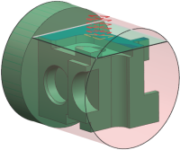
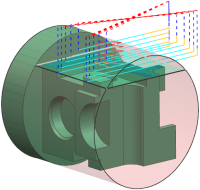
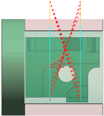

底面和壁铣削
使用底面和壁或带 IPW 的底面和壁子类型的工序可对棱柱部件和特征进行高效加工。
针对棱柱部件的基本底面和壁铣削，使用底面和壁  工序。
工序。
使用 IPW 跟踪未切削材料时，请针对棱柱部件的底面和壁铣削使用带 IPW 的底面和壁  工序。
工序。
使用以上工序时，您可以：
-
同时加工底面、壁以及底面和壁的组合
-
加工壁和不以底面几何体为边界的锥壁
-
包含切削区域并控制切削区域形状
-
控制毛坯，并预览毛坯和切削层
|
 显示切削区域和切削层的部件及 IPW |
||
|
 沿壁向下切削至底面的刀轨 |
|
 刀轨的俯视图 |
原有的面铣工序
NX 可将 NX 8.5 之前版本的面铣工序迁移至合适的工序类型。
|
NX 8.5 之前版本的面铣工序 |
当前面铣和底面壁工序 |
|
使用跟随部件、跟随周边、轮廓、摆线、单向、往复或单向轮廓切削模式的FACE_MILLING_AREA |
|
|
FACE_MILLING_AREA，使用混合切削模式 |
|
|
FACE_MILLING，使用边界 |
使用边界面铣削 |
位于何处？
|
应用模块 |
加工 |
|
工具条 |
插入→创建工序 |
|
菜单 |
插入→工序 |
|
对话框中的位置 |
类型列表→mill_planar→工序子类型组→底面和壁 |